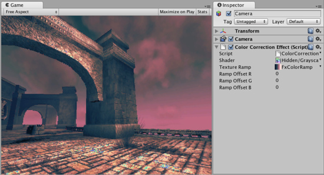

Color Correction image effect
Color Correction allows you apply arbitrary color correction to your scene as a postprocessing effect (just like the Curves tool in Photoshop or Gimp). This page explains how to setup color correction in Photoshop and then apply exactly the same color correction at runtime in Unity.
Like all image effects, Color Correction is only available in Pro version of Unity. Make sure to have the Pro Standard Assets installed.

Color correction applied to the scene. Color ramp used (magnified) is shown at the right.
Color correction applied to the scene. Color ramp used (magnified) is shown at the right.

Color ramp used for the image above.
Getting color correction from Photoshop into Unity
- Take a screenshot of a typical scene in your game
- Open it in Photoshop and color correct using the
- Save the .acv file file from the dialog using
- Open in Photoshop
- Now apply color correction to the ramp image: open again and load your saved .acv file
- Select your camera in Unity and select to add color correction effect. Select your modified color ramp.
- Hit Play to see the effect in action!
Details
Color correction works by remapping the original image colors through the color ramp image (sized 256x1):
- result.red = pixel's red value in ramp image at (original.red + RampOffsetR) index
- result.green = pixel's green value in ramp image at (original.green + RampOffsetG) index
- result.blue = pixel's blue value in ramp image at (original.blue + RampOffsetB) index
So for example, to invert the colors in the image you only need to flip the original color ramp horizontally (so that it goes from white to black instead of from black to white).
A simpler version of color remapping that only remaps based on luminance can be achieved with Grayscale image effect.
Tips:
- The color correction ramp image should not have mip-maps. Turn them off in Import Settings. It should also be set to Clamp mode.
Hardware support
This effect requires a graphics card with pixel shaders (2.0) or OpenGL ES 2.0. PC: NVIDIA cards since 2003 (GeForce FX), AMD cards since 2004 (Radeon 9500), Intel cards since 2005 (GMA 900); Mobile: OpenGL ES 2.0; Consoles: Xbox 360, PS3.
All image effects automatically disable themselves when they can not run on end-users graphics card.
Page last updated: 2011-05-12